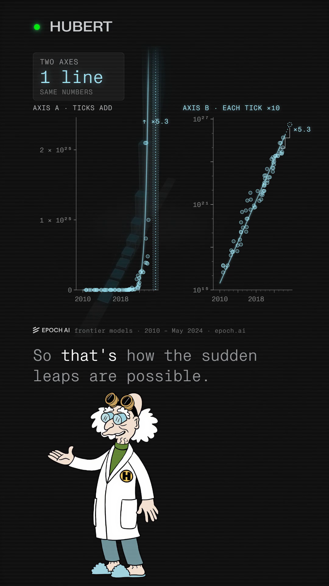

You commented AXIS — this is the two-axis card.
The leap wasn't sudden. You were reading the wrong axis.
A chessboard doubled 64 times already proves the point: every square holds more than every square before it, combined, so a normal axis always draws a wall wherever you happen to stop counting — stop at square twenty or square sixty and the picture looks the same. Change what one tick on the axis means — instead of adding the same amount each tick, it multiplies by ten — and the same growth becomes a straight line instead of a wall. Epoch AI's own fit for the training compute behind frontier AI models since 2010 runs at about 5.3x a year; on that axis, GPT-3 (2020) and GPT-4 (2023, roughly 67 times the compute, by Epoch's estimate) both sit on it. The leap looks sudden only on the axis that hides it.
Companion to the reel · Watch it on @huberttheinventor

Nº001 · The chessboard
One grain, doubled 64 times, beats itself
One grain of rice on the chessboard's first square, doubled on every square after: by Wikipedia's “Wheat and chessboard problem,” the 64th square alone holds 9,223,372,036,854,775,808 grains — “one more grain than the entire first half” of the board combined. The whole 64-square board holds 18,446,744,073,709,551,615 grains in total.
| Square 1 | 1 grain |
| Square 12 | 2,048 grains |
| Square 64 (alone) | 9,223,372,036,854,775,808 grains |
| All 64 squares | 18,446,744,073,709,551,615 grains |
Nº002 · Why a normal axis always shows a wall
The wall is wherever you stop
Plot each square's count on an axis whose ticks add the same amount, and the bars have to keep rescaling so the newest one fits — every earlier bar sinks toward the floor. That isn't a quirk of rice: for the chessboard's doubling (factor 2), the newest square always beats every square before it combined, by exactly one grain. The same holds for any constant growth factor of 2 or more (the geometric-series identity 1 + 2 + … + 2n−1 = 2n − 1 < 2n, and its general form for any factor r ≥ 2). Stop the count at square twenty, or at square sixty, and you get the same silhouette: a flat floor and a wall at whatever squares are newest. The axis manufactures the surprise.
Nº003 · The fix
An axis where each tick multiplies
Change what one tick on the axis means. Instead of adding the same amount each tick (0, 1,000, 2,000…), make each tick multiply by ten (1, 10, 100, 1,000…) — a semi-log plot. Wikipedia's “Semi-log plot” states the rule directly: “All equations of the form y = λaγx form straight lines when plotted semi-logarithmically.” Wikipedia's “Logarithmic scale” describes the mechanism: “each unit of length…corresponds to the multiplication of the previous value in the scale by the base value.” Any quantity growing by the same factor every step — the chessboard's doubling, or a yearly compute multiplier — draws a straight line on that axis, because every step is now the same size.
Nº004 · The real marks
AI training compute, on the same two axes
Epoch AI tracks the training compute of frontier AI models back to 2010, from 333 compute estimates, and fits a line: about 5.3x a year (90% confidence interval 4.9x–5.7x) for the frontier set — the biggest models of their year — by Epoch's blog post “Training compute of frontier AI models grows by 4-5x per year.” On that axis, two named models both sit on the line.
| GPT-3 | May 2020 · 3e23 FLOP |
| GPT-4 | 2023 · about 2e25 FLOP, Epoch's estimate |
| Ratio | ×67 (2e25 ÷ 3e23, computed 2026-10-01) |
The 2.8 years between GPT-3 and GPT-4 implies a per-year factor of about 4.5x — inside the scatter of Epoch's own frontier fit (5.3x, CI 4.9x–5.7x), not exactly on it; “sits on the ramp” means within that scatter. Read the same two marks back on the adding axis and GPT-3 sinks toward the floor while GPT-4 looks like it came from nowhere — the same move square 12 makes against the full 64-square board.
Nº005 · The honest scope
Which set, and whose estimate
5.3x a year is the frontier-only fit. Epoch's wider “notable models” set (every model it tracks, not just the biggest of each year) scatters more and fits slower over the same 2010–2024 window: about 4.1x a year (90% CI 3.7x–4.6x) by the same blog post, or about 4.4x a year by Epoch's separate 2024-06-19 data insight, “Training compute has been doubling roughly every six months.” The GPT-4 compute figure is Epoch's own estimate, not a number OpenAI has disclosed. Nothing on this page is drawn from anywhere but Epoch AI's two published pages and the Wikipedia articles cited below.
One system, taken apart.
Same treatment, different machine. No pitch, no thread-bait, and an unsubscribe link that works.
Take it with you
The two-axis card is this page: the same compute marks on an axis that adds and an axis that multiplies, free, no email.
The List
One a week. And the other seven, now.
Confirm your address and the whole set arrives — all ten field guides, exactly as they are on the site, nothing held back for subscribers. After that, one new system taken apart every week. No pitch, no thread-bait, and an unsubscribe link that works.